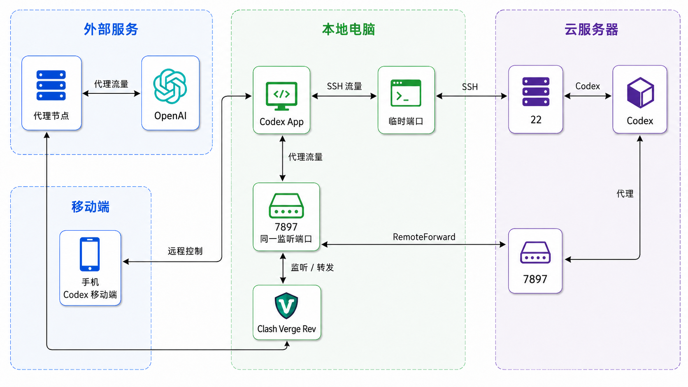

这篇文章解决一个实际问题：
手机发出任务，Windows 负责连接，Linux 云服务器负责运行 Codex；当云服务器无法直接访问 OpenAI 时，再借用 Windows 上的 Clash 代理。
可以把三台设备理解成三个角色：
| 设备 | 做什么 |
|---|---|
| 手机 | 发任务、看进度、回复和批准操作 |
| Windows 电脑 | 运行 Codex App，保持连接，并运行 Clash Verge Rev |
| Linux 云服务器 | 保存项目，运行 Codex、测试和部署 |
先看整体连接
手机和云服务器并不是直接连接。手机先连接 Windows 上的 Codex App，再由 Codex App 连接云服务器。
在本文所排查的环境中，服务器部分目标连接失败，因此为需要的请求使用 Windows 代理；这不代表国内服务器无法访问所有境外服务：
手机 ↓ 操作 Windows Codex App ↓ SSH 连接 Linux 云服务器 Codex ↓ 代理请求 Windows Clash Verge Rev ↓ 网络代理节点 → OpenAI

手机控制 Windows Codex App；云服务器 Codex 的代理流量通过 SSH 回到 Windows，再由 Clash 访问 OpenAI。
为什么需要两种 SSH 连接
这里的 SSH 可以先理解成“Windows 通往云服务器的一扇加密的门”。
- 普通 SSH：打开这扇门并登录服务器，适合 PowerShell、VS Code；
- 带
RemoteForward的 SSH：除了登录，还在门里增加一条“回程通道”，把云服务器的代理请求带回 Windows。
RemoteForward 是 SSH 的反向端口转发功能。它让云服务器上的 Codex 访问云端 127.0.0.1:7897 时，沿 SSH 连接回到 Windows 的 127.0.0.1:7897，再交给 Clash：
云服务器 Codex
↓ HTTP_PROXY / HTTPS_PROXY
云端 127.0.0.1:7897
↓ SSH RemoteForward
Windows 127.0.0.1:7897
↓
Clash Verge Rev → 网络代理节点 → OpenAI
因此，带 RemoteForward 的 SSH = 普通 SSH 登录 + 一条反向转发通道。它不是新的代理软件，也不是 VPN；只有明确使用云端 127.0.0.1:7897 的程序及其子进程才可能走这条路径；它不接管服务器全部流量，Clash 规则也可能选择直连。
本文统一使用代理端口 7897。云端和 Windows 各有一个 7897，属于不同主机，不会冲突；但同一时间只能有一条连接占用云端 7897。
一、准备 SSH 私钥和公钥
SSH 密钥是一对文件：
id_ed25519：私钥，只留在 Windows 本机；id_ed25519.pub：公钥，复制到 Linux 的~/.ssh/authorized_keys。
服务器只保存公钥，不需要、也不应该保存私钥。
1. 生成或检查密钥
在 PowerShell 检查：
Get-ChildItem "$env:USERPROFILE\.ssh\id_ed25519*"如果没有密钥，生成它们：
ssh-keygen -t ed25519 -C "codex-windows"默认路径可按回车确认，并设置私钥口令。已有任一密钥文件时先核查，不覆盖已有私钥；私钥口令不要写进配置文件或文章。
2. 安装公钥
云平台已导入公钥并绑定生效时，无需重复手工安装，也不会下载新私钥；仍使用本机原私钥。火山引擎已有实例绑定后需重启，密码登录可能失效，应按官方说明确认。手工安装则先用现有方式登录服务器，在 Windows 复制公钥：
Get-Content "$env:USERPROFILE\.ssh\id_ed25519.pub" | Set-Clipboard在 Linux 执行：
mkdir -p ~/.ssh
chmod 700 ~/.ssh
nano ~/.ssh/authorized_keys把公钥完整追加为一行，保留已有公钥并确认文件所有权，保存后执行：
chmod 600 ~/.ssh/authorized_keys公钥必须放在实际登录用户自己的目录中。例如登录用户是 dev，应放在 /home/dev/.ssh/authorized_keys，不是 /root/.ssh/authorized_keys。
3. 验证密钥登录
将下列变量替换为实际值后执行：
$serverUser = '你的Linux用户名'
$serverAddress = '你的服务器IP'
ssh -i "$env:USERPROFILE\.ssh\id_ed25519" -o IdentitiesOnly=yes "$serverUser@$serverAddress"输入私钥口令仅说明本机正在解锁私钥，成功进入服务器后才能确认登录通过。首次连接应核对服务器主机指纹。若仍要求 Linux 密码，检查公钥完整性、目标用户、文件所有权和 700 / 600 权限，以及服务端登录策略。
二、配置 Windows SSH
编辑：
C:\Users\<你的Windows用户名>\.ssh\config写入以下内容，并替换服务器 IP、Linux 用户名和 Windows 用户名：
# 普通登录：PowerShell、VS Code 使用
Host aliyun_wlcb
HostName <你的服务器IP>
User <你的Linux用户名>
Port 22
IdentityFile C:/Users/<你的Windows用户名>/.ssh/id_ed25519
IdentitiesOnly yes
# Codex App 使用：登录 + RemoteForward
Host aliyun_wlcb_proxy
HostName <你的服务器IP>
User <你的Linux用户名>
Port 22
IdentityFile C:/Users/<你的Windows用户名>/.ssh/id_ed25519
IdentitiesOnly yes
RemoteForward 127.0.0.1:7897 127.0.0.1:7897
ExitOnForwardFailure yes
ServerAliveInterval 30
ServerAliveCountMax 3两个别名的区别：
| 命令 | 用途 |
|---|---|
ssh aliyun_wlcb | 普通登录，不建立反向转发 |
ssh aliyun_wlcb_proxy | 登录并建立云端 7897 到 Windows 7897 的反向转发 |
私钥始终留在 Windows；不要上传到手机、服务器或文章中。私钥泄露后，应立即删除服务器上的对应公钥并重新生成密钥。
三、验证代理链路
1. 验证 Windows Clash
启动 Clash Verge Rev，在 PowerShell 执行：
curl.exe -x http://127.0.0.1:7897 https://api.ipify.org能返回公网 IP，只说明本次请求可通过代理访问该站点；还需验证实际目标和完整下载，HTTP 200 响应头不等于所有服务可用。
2. 建立带转发的 SSH
ssh aliyun_wlcb_proxy测试时保持该连接在线。实际使用 Codex App 时，由 App 管理这条连接，不要再手动启动第二条相同的转发。
3. 在 Linux 验证云端入口
另开一个 PowerShell，普通登录服务器：
ssh aliyun_wlcb在 Linux 执行：
ss -lnt | grep 7897
curl -x http://127.0.0.1:7897 https://api.ipify.org能返回代理节点的公网 IP，说明 RemoteForward 成功。
四、安装、登录并启动云端 Codex
首次部署需要可用的 Node.js 和 npm。以下命令在 Linux 当前终端执行，保持反向转发 SSH 与 Clash 在线：
export http_proxy="http://127.0.0.1:7897"
export https_proxy="http://127.0.0.1:7897"
export no_proxy="localhost,127.0.0.1,::1"
npm install -g @openai/codex@latest
codex --versionhttps_proxy 中的 http:// 表示连接 HTTP 代理的协议，目标 HTTPS 仍验证证书。上面的 export 用于安装前或临时下载；安装 Codex 后，创建它在启动时自动读取的代理文件：
mkdir -p ~/.codex
micro ~/.codex/.env保留已有其他配置，添加或更新：
HTTP_PROXY=http://127.0.0.1:7897
HTTPS_PROXY=http://127.0.0.1:7897
ALL_PROXY=http://127.0.0.1:7897
http_proxy=http://127.0.0.1:7897
https_proxy=http://127.0.0.1:7897
all_proxy=http://127.0.0.1:7897
NO_PROXY=localhost,127.0.0.1,::1
no_proxy=localhost,127.0.0.1,::1保存并限制权限：
chmod 600 ~/.codex/.env以后 Codex 启动时读取 .env，无需每次 export，但仍需 SSH 隧道和 Clash 在线。其他独立下载工具不会自动读取它。App 和 CLI 应核对实际用户与 CODEX_HOME；修改后重新启动对应 Codex 进程。
使用设备码登录：
codex login --device-auth在本机浏览器打开 CLI 提供的网址，输入本次验证码并完成授权；不要分享验证码。账户或工作区需允许设备码登录。授权完成后检查：
codex login status登录缓存存在不等于服务调用正常。在实际项目目录运行 Codex，发送“只回复 OK”，收到回复再确认调用通过：
cd /path/to/your/project
codex设备码不可用时，可用 SSH 转发普通浏览器登录的本地回调；参见 OpenAI 官方登录说明。服务器自身仍需能访问登录与模型服务。
五、手机端使用
每次使用前：
- Windows 保持开机、联网且不睡眠；
- 启动 Clash Verge Rev；
- 启动 Windows Codex App，让它使用
aliyun_wlcb_proxy； - 由 App 建立可用的 Linux 远端会话并验证代理，无需额外保留手工 CLI 会话；
- 手机连接 Codex App，发送任务并查看进度。
手机不保存服务器私钥，也不直接建立 SSH。代码读写、命令执行、测试和部署都发生在 Linux 云服务器上。
常见问题
remote port forwarding failed for listen port 7897
云端 7897 已被另一条反向转发占用。关闭重复的 aliyun_wlcb_proxy，其他终端使用 aliyun_wlcb。
云端没有监听 7897
检查 Clash、Codex App 和带转发的 SSH 是否在线。也可以临时手动建立转发：
ssh -NT -R 127.0.0.1:7897:127.0.0.1:7897 aliyun_wlcb手动命令与 Codex App 的 aliyun_wlcb_proxy 二选一，不能同时运行。
手机无法连接 Codex App
检查 Windows 是否睡眠、Codex App 是否运行、本地网络是否正常。Windows App 或 SSH 断开后，手机远程控制和云端代理都会受到影响。
2026-10-17 同步修订。尚未验证本次 Codex 完整授权、模型请求和手机到 App 的整条远程操作链路。SSH 认证细节参见 SSH 公钥认证协议，云平台绑定参见 火山引擎说明。
最后记住
aliyun_wlcb 普通 SSH aliyun_wlcb_proxy SSH + RemoteForward 7897 云端代理入口 ↔ Windows Clash 入口